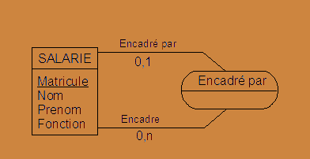

Analyse & Conception de données
Entité
Une entité est un élément distinguible regroupant des informations qui lui sont intrasèques. On nomme ces informations attributs, champs ou propriétés.
Aussi, un attribut permettant d'identifier de façon unique un enregistrement lui est propre, il s'agit de sa référence unique
Attributs
Les attributs sont indivisibles, typés, soumis à des contraintes et à des règles de calcul.
Ils comportent un code et une description.
Relation
Une relation établit un lien entre une ou plusieurs entités. Elle peut être caractérisée par un verbe d'état et/ou d'un ou plusieurs attributs.
Relations ou Entités?
Dans la conception du MCD, il arrive de se demander si un élément doit être matérialisé en une relation ou une entité. En l'absence de clé unique qui définit l'entité, le choix doit être porté vers une relation. Le cas contraire, on choisira une entité.
Clé Primaire
Une clé primaire est la donnée qui permet d'identifier de manière unique un enregistrement dans une entité.
Clé Étrangère
Une clé étrangère, dans une base de données relationnelle, est une contrainte qui garantit l'intégrité référentielle entre deux tables. Elle établit le lien entre deux tables en étant liée à la clé primaire d'une autre table.
Dictionnaire de données
Un dictionnaire de données permet de répertorier les informations constituant l'application en données indivisibles. Ces dernières sont nommées, décrites, typées et regroupées en entités. Y figurent également les contraintes et certaines règles de calcul.
Modèle Conceptuel de données (MCD)
Le MCD est un schéma représentant l'ensemble des données ordonnées en entité constituée d'attributs, caractérisée par une référence unique et mise en relation avec les autres entités. Ces relations peuvent s'illustrer par des verbes, voire des attributs et se lisent par le biais de cardinalités.
Modèle Physique de données (MPD)
Le MPD est le schéma résultant du MCD suite à l'application des règles suivantes :
- Les références uniques se transforment en clés primaires et d'autres contraintes telles que la nullabilité et l'auto-incrément peuvent y figurer.
- Pour les relations many to one, la clé primaire de l'entité forte (many) est reportée dans l'entité faible (one) sous forme de clé étrangère. Les attributs de la relation se reportent également dans l'entité faible.
- Les relations many to many, se traduisent par la création d'une table d'association. Sa clé primaire est la concaténation des clés étrangères la reliant aux entités d'origines. Elle reprend les attributs de la relation.
Cardinalités
Les cardinalités permettent de définir quels types de relation relient les entités. Une cardinalité est symbolisée par deux particules, une déterminant le minimum, l'autre le maximum :
Les valeurs des cardinalités sont :
Pour la particule gauche :
- Il peut ne pas en avoir (0)
- Il doit y en avoir au moins un (1)
Pour la particule droite :
- Il y en a un maximum (1)
- Il peut y en avoir plusieurs (n)
Many to one - Many to many
"Many to one" se réfère à une relation où plusieurs entrées dans une table peuvent être liées à une seule entrée dans une autre table. Par exemple, plusieurs employés peuvent être associés à un seul département dans une entreprise. "Many to many" se réfère à une relation où plusieurs entrées dans une table peuvent être liées à plusieurs entrées dans une autre table. Par exemple, plusieurs étudiants peuvent être inscrits à plusieurs cours et plusieurs cours peuvent être suivis par plusieurs étudiants.
Entité d'association
Une entité d'association est une entité issue d'une relation de type 'many to many' ou n-n. Elle héritera donc de toutes les références uniques des tables reliées et l'ensemble de ces clés constitueront une clé primaire.
Relation réflexive
Dans une relation reflexive, une entité est mise en relation avec elle-même. Cette entité est caractérisée par deux clés étrangères correspondant respectivement à l'entité d'origine et à l'entité issue de la relation reflexive.

Par exemple, pour une entité Salarié, une deuxième entité relative au supérieur hiérarchique peut être distinguée. Cette dernière est un élément de Salarié qui est mis en relation avec une autre élément de Salarié pour déterminer leur rapport hiérarchique.
Aussi, MatriculeSalarie serait la clé étrangère de l'entité Salarié et MatriculeResponsable, la clé étrangère de l'entité Responsable.
Les cas de relations reflexives les plus courants sont relatifs au lien de parenté ou de composition d'objet par incrément et plus généralement dans les schémas représentants des ramifications.